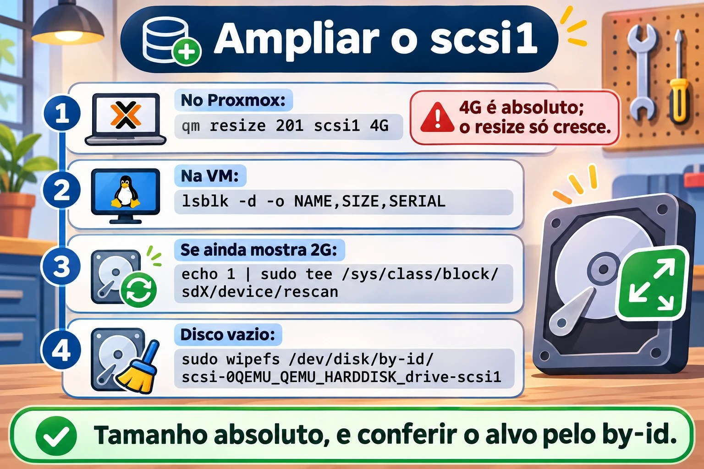

Aula 9.1 · Discos e layout
No Windows, você abre o Gerenciamento de Disco, vê "Disco 1" e uma letra de unidade, e o resto parece natural. No Linux, o mesmo disco tem vários nomes, e escolher o nome errado antes de um mkfs apaga o disco errado. Nesta aula você faz o backup que o módulo exige, amplia o disco scsi1 que a aula 2.2 deixou nas duas VMs, aprende a ler o layout do disco do sistema e a identificar o disco de laboratório sem erro. Nada é gravado nele.
Núcleo desta aula: saber a diferença entre MBR e GPT; conhecer os nomes de um disco (
sdX,by-id,by-uuid,by-path,by-partuuid); ler um layout comlsblk -f,blkid,fdisk -leparted -l; e identificar o alvo peloby-idantes de qualquer comando destrutivo. O resto é aprofundamento.
| Ficha | |
|---|---|
| Módulo | M9 · Armazenamento, aula 1 de 7 |
| Quando | Semana 13 |
| Ao final | Você lê o layout de qualquer disco, identifica o scsi1 (agora com 4 GiB) com segurança e deixa o plano das partições escrito |
| Pré-requisitos | Aulas 0.1, 0.2, 2.2 e 8.1 |
| Tempo | cerca de 2h |
| Snapshots | m9a1-inicio e m9a1-fim na rocky-lab e na debian-lab |
1 · Aquecimento
Responda antes de ler.
- Um disco aparece como
/dev/sdb. Você pode confiar que, depois de um reboot, ele continuasdb? - Qual é o limite de tamanho de um disco com tabela de partições MBR?
- O que
lsblkmostra quedf -hnão mostra?
2 · Por que importa
| O chamado | A resposta errada | O que ela causa |
|---|---|---|
| "Adicionei um disco na VM, formate para mim" | mkfs em /dev/sdb, sem conferir | Em outra máquina, o sdb era um disco com dados |
| "O script de backup parou de achar o disco" | Trocar sdb por sdc no script | Na próxima mudança de ordem quebra de novo |
| "O disco de 4 TB só mostra 2 TB" | Comprar outro disco | A tabela era MBR; precisava ser GPT |
| "A VM não sobe depois de mexer no disco" | Reinstalar | Faltava a partição EFI ou o fstab apontava para um nome que mudou |
3 · Modelo mental
Um disco é um terreno, e a tabela de partições é a planta de loteamento: ela diz onde cada lote começa e termina. O sistema de arquivos é a casa construída em cada lote (aula 9.3). O nome
/dev/sdbé o número do terreno na fila de entrega: pode mudar de uma visita para a outra. Oby-idé a matrícula do cartório: identifica o terreno pela vida inteira.
disco inteiro /dev/sdb ← by-id: scsi-0QEMU_QEMU_HARDDISK_drive-scsi1
└─ tabela GPT ou MBR ← a planta do loteamento
├─ partição 1 /dev/sdb1 ← by-partuuid, e by-uuid depois do mkfs
├─ partição 2 /dev/sdb2
└─ espaço livre ← sem lote, sem casa
└─ dentro de cada partição: sistema de arquivos, swap ou PV do LVM
Ponte Windows
| No Windows | No Linux | Onde a comparação engana |
|---|---|---|
| Gerenciamento de Disco | lsblk, fdisk -l, parted -l | No Linux, você lê no terminal, e o mesmo comando serve no servidor sem tela |
diskpart: list disk, select disk 1 | fdisk ou parted apontando para um dispositivo | O número do disco no diskpart também muda; aqui o by-id é o seguro |
convert gpt | fdisk, gdisk, parted (aula 9.2) | Tabela nova apaga as partições antigas, nos dois |
Letra de unidade (D:) | Ponto de montagem (/srv/dados) | Não existe letra: o disco entra numa pasta (aula 9.4) |
4 · O essencial
GB × GiB, uma vez
O Proxmox e o fdisk contam em potências de 1024: 1 GiB são 1.073.741.824 bytes. O parted e os fabricantes contam em potências de 1000. Por isso o disco de 4 GiB aparece no parted como 4295MB. Escreva GiB e MiB para ter precisão; +1G no fdisk é 1 GiB.
MBR × GPT
| MBR (DOS) | GPT | |
|---|---|---|
| Tamanho máximo do disco | 2 TiB | Na prática, sem limite |
| Partições | 4 primárias, ou 3 mais uma estendida com lógicas | 128 por padrão |
| Cópia da tabela | Nenhuma | Cabeçalho de reserva no fim do disco |
| Identificadores | Só o número do disco | GUID do disco e de cada partição |
| Firmware | BIOS (e UEFI em modo de compatibilidade) | UEFI, e BIOS com partição bios_boot |
O GPT grava também um "MBR de proteção" no setor 0, para que ferramentas antigas vejam o disco como ocupado. Use GPT em disco novo. Você pratica o MBR na aula 9.2.
Nas duas VMs, o disco do sistema é GPT, porque o firmware é UEFI (OVMF, aula 0.1). A primeira partição é a EFI (vfat, montada em /boot/efi): o UEFI só lê o carregador de lá.
Os nomes de um disco
| Nome | Exemplo | Estável? | Use para |
|---|---|---|---|
/dev/sdX | /dev/sdb | Não: depende da ordem de detecção | Olhar, nunca decidir |
/dev/nvmeXnY | /dev/nvme0n1p2 | Quase | Discos NVMe (partições levam p) |
/dev/disk/by-id/ | scsi-0QEMU_QEMU_HARDDISK_drive-scsi1 | Sim, é o disco | Identificar o disco antes de gravar |
/dev/disk/by-uuid/ | 5f2c... | Sim, é o sistema de arquivos | fstab, montagens |
/dev/disk/by-partuuid/ | 8c1e... | Sim, é a partição | Quando ainda não há sistema de arquivos |
Os nomes em /dev/disk/ são links do udev. Para ver o nome real: readlink -f LINK.

Comandos de leitura
Todos estes comandos só leem.
lsblk
lsblk -f
lsblk -d -o NAME,SIZE,MODEL,SERIAL
sudo blkid
sudo fdisk -l /dev/sda
sudo parted -l
cat /proc/partitionslsblklista discos e partições em árvore.-facrescenta sistema de arquivos, rótulo, UUID e montagem.-dmostra só os discos, e-oescolhe as colunas.blkidmostra UUID, rótulo e tipo do que tem sistema de arquivos reconhecido. Disco vazio não aparece.fdisk -l DISCOimprime a tabela de partições. O-lsó lista, não grava.parted -lfaz o mesmo para todos os discos, em MB. Num disco sem tabela, escreveunrecognised disk label: é informação, não erro./proc/partitionsé a lista do kernel, em blocos de 1 KiB.
O hábito antes de qualquer comando destrutivo
Antes de fdisk gravando, mkfs, wipefs, pvcreate ou dd, faça sempre:
lsblk: confira que o alvo não temMOUNTPOINTS.ls -l /dev/disk/by-id/e ache o disco pelo número do Proxmox (drive-scsiN).readlink -fdoby-idpara saber o nomesdXdesta vez.
Rocky × Debian
| Rocky 9 | Debian 13 | |
|---|---|---|
| Layout do instalador | EFI, /boot (xfs), PV do grupo rl | EFI, /boot (ext4), PV do grupo debian-lab-vg |
| LVs do sistema | root (XFS) e swap | root (ext4) e swap_1 |
| Dispositivo do root | /dev/mapper/rl-root | /dev/mapper/debian--lab--vg-root |
| Conferir pacote | rpm -q gdisk parted | dpkg -s gdisk parted |
No Debian, o hífen do nome do grupo vira -- no mapper. O lsblk -f mostra isso.
5 · Lab guiado
Passo 0 · Snapshot, backup e pacotes. No Proxmox:
qm snapshot 201 m9a1-inicio
qm snapshot 202 m9a1-inicioAgora o backup que o módulo exige:
vzdump 201 --storage PBS-LAB --mode snapshot
vzdump 202 --storage PBS-LAB --mode snapshot
pvesm list PBS-LAB --vmid 201
pvesm list PBS-LAB --vmid 202O --mode snapshot faz o backup com a VM ligada. Cada vzdump leva alguns minutos. O pvesm list mostra uma linha por backup, com pbs-vm e um nome como PBS-LAB:backup/vm/201/2026-11-...Z. Sem linha com a data de hoje, não siga: refaça o vzdump e leia o erro.
Lembre: snapshot não é backup. O snapshot mora no mesmo Ceph da VM, e o backup mora no PBS. Nas próximas aulas do M9, este backup é a sua rede de proteção.
Na rocky-lab:
sudo dnf install -y gdisk parted
rpm -q gdisk partedNa debian-lab:
sudo apt install -y gdisk parted
dpkg -s gdisk parted | grep -E '^(Package|Status)'Passo 1 · Ler o disco do sistema. Na rocky-lab:
lsblk -f
sudo fdisk -l /dev/sda
sudo parted -l
cat /proc/partitionsSaída esperada do lsblk -f (UUIDs e tamanhos variam, os números das partições também):
NAME FSTYPE FSVER LABEL UUID FSAVAIL FSUSE% MOUNTPOINTS
sda
├─sda1 vfat FAT32 1A2B-3C4D 588.5M 2% /boot/efi
├─sda2 xfs 0f3b... 812.4M 16% /boot
└─sda3 LVM2_member LVM2 001 Xq7p...
├─rl-root xfs 7d91... 14.3G 16% /
└─rl-swap swap 1 c04e... [SWAP]O sudo fdisk -l /dev/sda mostra Disklabel type: gpt e as mesmas três partições, com tipos EFI System, Linux filesystem e Linux LVM.
Leia assim: tabela GPT, três partições, e a terceira é um PV do LVM, com os LVs rl-root e rl-swap dentro. Anote qual é a EFI, qual é /boot e qual é o PV.
Passo 2 · Ampliar o disco scsi1. A aula 2.2 ligou um scsi1 de 2 GiB, vazio, nas duas VMs, e disse que ele era o material do M9. Confira no Proxmox:
qm config 201 | grep scsi1
qm config 202 | grep scsi1Saída esperada, para cada VM:
scsi1: vm-hdd:vm-201-disk-2,discard=on,iothread=1,size=2G,ssd=1Os números de disk-N variam. Com o disco de 2 GiB lá, amplie para 4 GiB:
qm resize 201 scsi1 4G
qm resize 202 scsi1 4G
qm config 201 | grep scsi1O 4G é um tamanho absoluto: o disco passa a ter 4 GiB. Com +4G seria relativo, e o disco ficaria com 6 GiB. O qm resize só cresce: não existe encolher, e o snapshot m9a1-inicio não é a forma de desfazer. Pense no tamanho antes.
Se o scsi1 não existir (você pulou a 2.2 ou o apagou), crie direto com 4 GiB:
qm set 201 --scsi1 vm-hdd:4,discard=on,iothread=1,ssd=1
qm set 202 --scsi1 vm-hdd:4,discard=on,iothread=1,ssd=1Passo 3 · Identificar e conferir o disco. Na rocky-lab:
lsblk -d -o NAME,SIZE,MODEL,SERIAL
ls -l /dev/disk/by-id/ | grep scsi
readlink -f /dev/disk/by-id/scsi-0QEMU_QEMU_HARDDISK_drive-scsi1Saída esperada:
NAME SIZE MODEL SERIAL
sda 20G QEMU HARDDISK drive-scsi0
sdb 4G QEMU HARDDISK drive-scsi1
lrwxrwxrwx. 1 root root 9 ... scsi-0QEMU_QEMU_HARDDISK_drive-scsi1 -> ../../sdb
/dev/sdbA coluna SERIAL repete o drive-scsiN do Proxmox. É assim que você liga o scsi1 do Proxmox ao sdb que o Linux vê. Se o SIZE ainda mostra 2G, o kernel não viu o tamanho novo: veja a Quebra 3. Agora confirme que o disco está vazio:
lsblk -f /dev/sdb
sudo blkid /dev/sdb
echo $?
sudo wipefs /dev/disk/by-id/scsi-0QEMU_QEMU_HARDDISK_drive-scsi1
sudo fdisk -l /dev/sdb
sudo parted -lO lsblk -f não mostra sistema de arquivos no sdb. O blkid não imprime nada, e o echo $? mostra 2: nada reconhecido. O wipefs, sem -a, só lista assinaturas: sem saída, o disco está limpo. Não use -a. O fdisk -l mostra Disk /dev/sdb: 4 GiB e nenhuma linha de Disklabel type. O parted -l mostra unrecognised disk label e Disk /dev/sdb: 4295MB.
Passo 4 · Os nomes estáveis. Na rocky-lab, a regra /etc/udev/rules.d/99-lab.rules da aula 2.2 dá ao mesmo disco o link /dev/lab-dados, pelo ID_SERIAL. É mais um nome estável do scsi1, feito por você:
ls -l /dev/lab-dadosDepois, os links do udev:
ls -l /dev/disk/by-uuid/
ls -l /dev/disk/by-partuuid/O by-uuid lista só o que tem sistema de arquivos ou swap, e o sdb não aparece. O by-partuuid lista só partições. Compare com o lsblk -f e ache o UUID do /boot.
Passo 5 · O caderno. Escreva no seu caderno de erros o plano do disco novo, que você executa na aula 9.2:
| Item | Valor |
|---|---|
| Disco | scsi1 (o da aula 2.2, ampliado), 4 GiB, /dev/disk/by-id/scsi-0QEMU_QEMU_HARDDISK_drive-scsi1 |
| Tabela | GPT |
| Partição 1 | 1 GiB, depois ext4, rótulo DADOS |
| Partição 2 | 1 GiB, depois XFS, rótulo ARQUIVO |
| Partição 3 | 512 MiB, depois VFAT, rótulo TROCA |
| Livre | cerca de 1,5 GiB, reservado para a aula 9.7 |
Passo 6 · debian-lab. Instale os pacotes do Passo 0 e repita os passos 1, 3 e 4. A regra /dev/lab-dados existe só na rocky-lab: na debian-lab use o by-id. No Passo 1, o lsblk -f mostra debian--lab--vg-root e debian--lab--vg-swap_1, e o /boot é ext4.
Decida 1
Um disco de 6 TB, vazio, vai para dados. Qual tabela usar?
A) MBR, porque é a mais compatível. B) GPT. C) MBR com uma partição estendida.
Marque uma opção antes.
| Se você marcou | Resultado | Por quê |
|---|---|---|
| A | Perde 4 TB | O MBR enxerga no máximo 2 TiB |
| B | Certo | Sem limite prático, com cabeçalho de reserva |
| C | Continua limitado | A estendida não muda o limite de tamanho |
Para fixar: disco novo é GPT.
Decida 2
Num servidor físico com dois discos de 1 TB iguais, um script vai rodar mkfs no segundo. Como identificar o alvo?
A) /dev/sdb, porque "é sempre o segundo". B) Pelo tamanho. C) Pelo /dev/disk/by-id/ (modelo e série), conferindo com lsblk.
Marque uma opção antes.
| Se você marcou | Resultado | Por quê |
|---|---|---|
| A | Risco de apagar o disco errado | A ordem muda entre boots e máquinas |
| B | Não distingue | Os dois têm o mesmo tamanho |
| C | Certo | O número de série é do disco |
Para fixar: o sdX é para olhar, e o by-id é para decidir.
6 · Quebre e conserte
Quebra 1 · O tutorial que mandou formatar o sdb
Um tutorial diz "rode mkfs.ext4 /dev/sdb". Nada é gravado aqui.
Sintoma: você está a um Enter de formatar /dev/sdb.
Investigação: na rocky-lab:
lsblk -o NAME,SIZE,SERIAL,MOUNTPOINTS /dev/sdb
readlink -f /dev/disk/by-id/scsi-0QEMU_QEMU_HARDDISK_drive-scsi1Causa: no laboratório, sdb e scsi1 coincidem hoje. Numa máquina com dois discos, nada garante isso.
Conserto: faça disso o seu ritual. Se o sdb tiver MOUNTPOINTS ou outro SERIAL, pare.
Quebra 2 · O nome que só existe numa VM
Sintoma: na debian-lab, ls -l /dev/lab-dados responde No such file or directory, e um script copiado da rocky-lab falha.
Investigação: na debian-lab:
ls /etc/udev/rules.d/
ls -l /dev/disk/by-id/ | grep scsi1Causa: o /dev/lab-dados é uma regra do udev que você criou só na rocky-lab (aula 2.2). O by-id é criado pelo sistema em qualquer máquina.
Conserto: use /dev/disk/by-id/scsi-0QEMU_QEMU_HARDDISK_drive-scsi1 nas duas VMs.
Quebra 3 · O disco que não cresceu dentro da VM
Sintoma: o qm config mostra size=4G, mas o lsblk ainda mostra o sdb com 2G.
Investigação: na rocky-lab:
lsblk -d -o NAME,SIZE,SERIAL
cat /sys/class/block/sdb/sizeO arquivo size conta setores de 512 bytes: 4 GiB são 8388608, e 2 GiB são 4194304.
Causa: o Proxmox aumentou o disco virtual, mas o kernel ainda não releu a capacidade. Com virtio-scsi isso costuma ser automático; quando não for, é preciso pedir.
Conserto: confira o nome com o by-id e peça a releitura:
readlink -f /dev/disk/by-id/scsi-0QEMU_QEMU_HARDDISK_drive-scsi1
echo 1 | sudo tee /sys/class/block/sdb/device/rescan
lsblk -d -o NAME,SIZETroque sdb pelo nome do readlink.


Limpeza
Não há nada a apagar: nada foi gravado no disco. Confira que as duas VMs têm o scsi1 com size=4G.
7 · Armadilhas
| Armadilha | O que acontece | Como evitar |
|---|---|---|
Confiar no /dev/sdX | Alvo errado depois de um reboot | by-id e lsblk antes de gravar |
qm resize com + sem pensar | Soma ao tamanho atual, e o disco não encolhe | Tamanho absoluto (4G), decidido antes |
8 · Quiz
Responda sem olhar. O gabarito está no fim da aula.
- Por que o
sdbde hoje pode não ser osdbde amanhã? - Qual nome identifica o disco, e qual identifica o sistema de arquivos?
- Quantas partições primárias o MBR permite?
- O que
parted -lescreve para um disco sem tabela, e isso é um erro? - Qual é a ligação entre
drive-scsi1e o Proxmox? - Qual a diferença entre
qm resize 201 scsi1 4Geqm resize 201 scsi1 +4G, e dá para desfazer?
9 · Cola
Para saber de cor:
| Quero... | Comando |
|---|---|
| Árvore de discos | lsblk -f |
| Só os discos, com série | lsblk -d -o NAME,SIZE,MODEL,SERIAL |
| Nome real de um link | readlink -f LINK |
| Tabela de um disco | sudo fdisk -l /dev/sdX |
| Identificar pelo Proxmox | ls -l /dev/disk/by-id/ | grep scsi |
Para consultar:
| Quero... | Comando |
|---|---|
| Disco no Proxmox | qm config 201 | grep scsi1 |
| Ampliar disco | qm resize 201 scsi1 4G |
| Reler o tamanho | echo 1 | sudo tee /sys/class/block/sdX/device/rescan |
Flashcards:
sdX→ ordem de detecção, pode mudar.by-id→ o disco, para sempre.qm resize→ só cresce.
10 · Checklist e fechamento
- [ ] Fiz o backup das duas VMs no PBS e conferi com
pvesm list - [ ] Ampliei o
scsi1da aula 2.2 para 4 GiB nas duas VMs - [ ] Identifiquei o
scsi1peloby-ide confirmei que está vazio - [ ] Leio um layout com
lsblk -fefdisk -l - [ ] Sei a diferença entre MBR e GPT
- [ ] Escrevi no caderno o plano do disco novo
Último exercício, sem olhar a aula: na debian-lab, descubra qual sdX é o disco scsi1, confira o tamanho, prove que ele está vazio (três comandos de leitura) e liste os nomes by-id das partições do disco do sistema.
Snapshot de fim (no Proxmox, com o scsi1 já ampliado):
qm snapshot 201 m9a1-fim
qm snapshot 202 m9a1-fim11 · Na vida real
Missão, só leitura. Num servidor Linux que você administre (ou com autorização), rode apenas:
lsblk -f
lsblk -d -o NAME,SIZE,MODEL,SERIAL,ROTA
sudo fdisk -l 2>/dev/null | grep -E '^(Disk /dev|Disklabel)'Perguntas para responder:
- Quantos discos físicos existem, e qual o tamanho de cada um?
- Cada disco usa MBR ou GPT? Algum disco grande está em MBR?
- Há espaço sem partição, ou um disco sem uso?
- O fstab usa
UUID=,LABEL=ou/dev/sdX?
Diário: anote o que não for claro. Não altere nada.
Amanhã, sem olhar: escreva os três passos do hábito antes de um comando destrutivo.
12 · Aprofundar quando quiser
man lsblk,man fdisk,man parted: colunas disponíveis e opções de leitura.- Red Hat Enterprise Linux 9, "Managing storage devices": a visão da Red Hat para discos e partições.
- kernel.org, documentação do
Documentation/admin-guide/devices.txt: a origem dos nomessd,vdenvme.
DeepTutor (http://10.1.0.149:3782, KB "Curso Linux Sysadmin"):
!explica a diferença entre MBR e GPT!quiz Aula 9.1, 5 perguntas sobre nomes de dispositivo
Gabarito comentado
Aquecimento
- Não. A ordem de detecção pode mudar entre boots, e o nome muda junto.
- 2 TiB.
- A estrutura de discos e partições, inclusive o que não está montado e o que não tem sistema de arquivos. O
df -hmostra só o que está montado.
Quiz
- Porque o
sdXé dado na ordem em que o kernel detecta os discos. Hardware novo, outro controlador ou outra ordem de inicialização trocam os nomes. - O
by-ididentifica o disco. Oby-uuididentifica o sistema de arquivos (ou o swap). - Quatro. Ou três primárias e uma estendida, que contém as partições lógicas.
unrecognised disk label. Não é erro: significa que ainda não há tabela de partições.- O Proxmox grava o
scsiNdo disco como número de série do disco virtual. O Linux o mostra noSERIALe no nome doby-id. - O primeiro deixa o disco com 4 GiB (absoluto); o segundo soma 4 GiB ao tamanho atual. Não dá para desfazer: o
qm resizesó cresce.